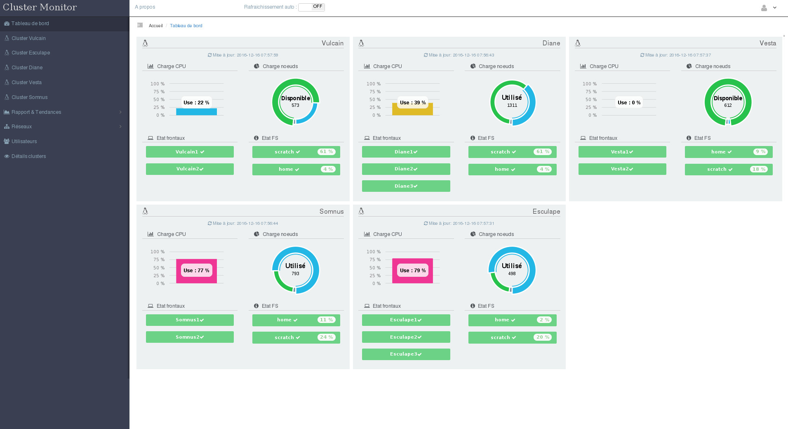

Overview
ClusterMonitor is a modern web application for viewing various information from one or more scientific computing clusters.
The web application is written in php and relies on a database mariadb / mysql which stores information from the various collectors of the clusters.

Easy to install
You can install and use it as a standalone application, or online on a mutualized or dedicated server to use it from anywhere.
Easy to use
The web insterface is responsive design and designed to be very intuitive.
Easy to develop
The web insterface in php is easy to change for add a multitude of additional view. The entirely bash collectors can thus easily adapt to several types of batch manager.
Plugins
ClusterMonitor use various framework and library javascript.
Compatibiliy
Bootstrap
Bootstrap is the most popular HTML, CSS, and JS framework for developing responsive, mobile first projects on the web.

Bootstrap Table
Is a extended Bootstrap table with radio, checkbox, sort, pagination, and other added features.
Jquery
jQuery is a fast, small, and feature-rich JavaScript library. It makes things like HTML document traversal and manipulation, event handling, animation, and Ajax much simpler with an easy-to-use API that works across a multitude of browsers.
Jquery UI
jQuery UI is a curated set of user interface interactions, effects, widgets, and themes built on top of the jQuery JavaScript Library.
Morris JS
Is a javascript responsive graph library based on the very competent raphael.js.
Raphael JS
Raphaël is a small JavaScript library that should simplify your work with vector graphics on the web.
Vis JS
A dynamic, browser based visualization library. The library is designed to be easy to use, to handle large amounts of dynamic data, and to enable manipulation of and interaction with the data. The library consists of the components DataSet, Timeline, Network, Graph2d and Graph3d.
Last news ...

ClusterMonitor 1.5.5
August 8, 2018Far far away, behind the word mountains, far from the countries Vokalia and Consonantia, there live the blind texts.